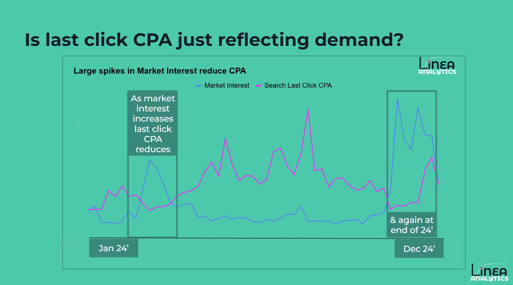
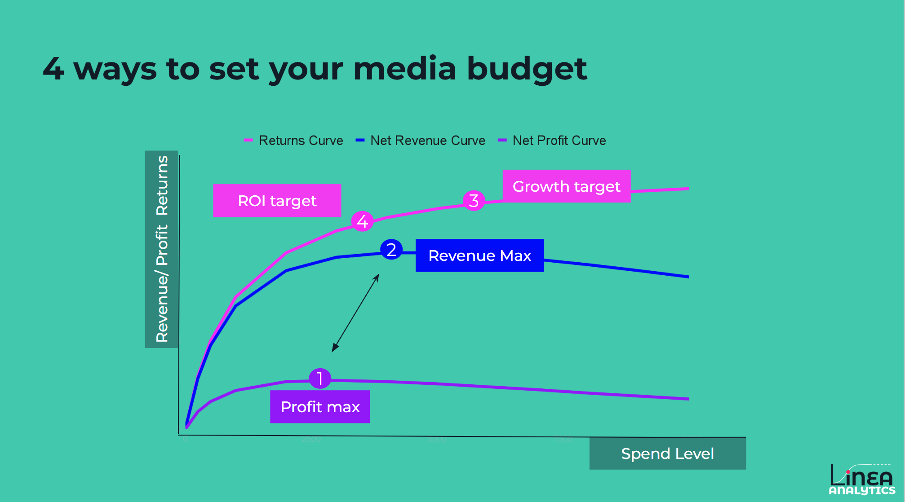
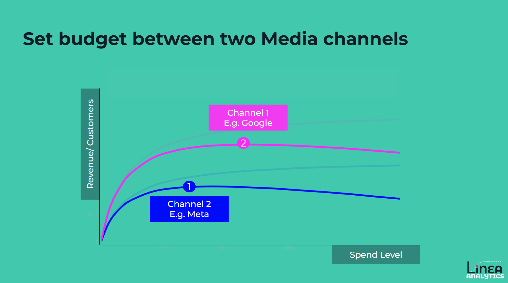

I’ve been saying this for the last 15 years of my career, and only recently have brands started taking notice: “In today’s marketing measurement environment, simply tracking clicks is no longer enough.”
To understand what truly drives growth, brands are turning to Marketing Mix Modelling (MMM) and econometrics to quantify the value of their media investments. Here are five core reasons CMOs and marketing teams should use econometrics in marketing.
The biggest risk in marketing today is relying too heavily on attribution models. These models, like last-click or platform-based attribution, give all the credit for a sale to the last touchpoint.
However, any marketer worth their salary knows: there is a large difference between a channel that records a conversion and a channel that drives a conversion.
Last-click attribution is often a reflection of existing demand rather than marketing effectiveness. For example, consider a brand during Black Friday. If their Cost Per Acquisition (CPA) drops from £20 to £10, the platform would suggest the marketing tactics have doubled in efficiency. In reality, there were simply more people in-market with a high intent to buy.
Last-click attribution tends to over-index on "demand-capture" channels (like Brand Search) while completely ignoring the "demand-generation" channels (like TV or YouTube) that put the brand in your customer’s mind months ago.

Incrementality is the measure of sales that occurred only because of a specific marketing contribution. If you turned off a specific channel today, how many sales would you actually lose? This is the question econometrics answers.
By using historical data to create a baseline of "organic" sales, those driven by brand equity, seasonality, or availability, econometrics isolates the specific "lift" provided by each media channel.
We call that incrementality - because everyone needs a buzzword.
When you understand incrementality, your budget allocation changes. You stop "chasing" low CPAs in channels that are merely capturing customers who would have bought anyway. Instead, you begin to invest in the true drivers of growth.
In reality, this means helping brands make better investment decisions. That could be moving spend away from short-term channels to long-term drivers or reallocating budgets towards high-performing channels.
One of the greatest challenges in marketing is justifying spending on brand-building activity. Unlike a "Buy Now" ad on Instagram, a TV campaign, or a high-production brand film won’t drive a sale within a standard 7-day or 30-day attribution window.
And if it did drive a short-term impact, how would you track that impact?
Most tracking-based tools are "short-sighted." They see the immediate response but miss the "tail" of the impact. If you only optimise for what happens in the first 48 hours, you will naturally starve your brand of the very investment needed to sustain long-term growth. Measuring this requires a move away from user-level tracking and toward statistical modelling.
Econometrics solves this through two primary lenses:
By quantifying the "tail" of the impact, econometrics allows for a fair comparison. You can finally answer: "Is a £500k TV flight that drives sales over six months better than a £500k Social spend that drives sales in six days?" This leads to a more balanced portfolio that protects the brand's future while meeting today's targets.
Annual planning is often a source of friction between the CMO and CFO. Marketing teams want to grow; Finance teams want to ensure efficiency. Econometrics acts as a broker in these conversations, providing a data-driven starter for budget setting.
Not every brand has the same goal. Some prioritise ROI (efficiency), others prioritise New Customer Acquisition (growth), and some focus on Brand Equity. Econometrics allows you to run "What-If" scenarios across all these KPIs. You can see how shifting 10% of your budget from Search to Video affects your new customer count versus your total revenue.

Without MMM, budgets are often set based on "last year plus 5%" or by rewarding the loudest voices in the room. Econometrics levels the playing field. It identifies which channels have "headroom" to grow and which have reached a point of saturation. It removes the bias of platform-reported ROIs, which are overinflated.
When brands move from intuitive budget setting to econometric-led optimisation, we typically see a +30% improvement in total marketing ROI. This isn't about spending more; it’s about spending smarter by putting every pound where it has the highest return.
Marketing does not operate in a vacuum. Your sales are influenced by promotions, the cost-of-living crisis, competitor discounts, and even the day of the week. Traditional attribution often mistakes these external factors for marketing performance.
If your ROI goes up in December, is that because your Christmas creative was brilliant, or because people simply buy more in December? Econometrics uses "control variables" to strip out the noise. It accounts for the baseline fluctuations in the market, ensuring that the ROI assigned to your media is incremental. This prevents you from over-investing in media during naturally high-demand periods where you might have achieved the sales organically.
The real power of Linea’s platform is the ability to run future-facing scenarios. If the economy is predicted to slow down by 2%, how should your media mix change to maintain your current CAC? By understanding how marketing interacts with the "real world," you can move from reactive to proactive planning.
While it's important not to over-credit media during peaks, econometrics also shows you exactly when to double down. By identifying the interaction between external demand and media effectiveness, you can time your largest investments to coincide with periods where the market is most receptive, driving significantly higher total returns.
The ultimate question from any leadership team is: "If I give you an extra £1m, what will I get back?" Most marketers struggle to answer this because they haven’t measured how changing spend impacts returns. This is what we call diminishing returns - yet another buzzword.
Every marketing channel has a "saturation point." The first £10,000 you spend on a channel is almost always more efficient than the last £10,000. As you scale, you hit the same people too many times (frequency), or you start reaching less relevant audiences. Econometrics plots these "curves" for every channel.
Looking to see what an extra £1m in the next quarter can drive? Instead of guessing, we use the diminishing returns curves to show you the "inflection point". The exact moment when spending more on Meta (for example) becomes less effective than spending that same money on Paid Search. This visibility allows brands to scale their budgets with total confidence, knowing they aren't just throwing money away.

This level of insight builds immense trust with Finance. When you can demonstrate exactly how much "headroom" is left in a channel and predict that you “can drive an extra 10,000 new customers with £1m of extra budget”. It positions marketing as a growth engine.
At Linea Analytics, we don't just provide reports; we provide a competitive advantage. The industry is changing, and the "once-a-year" retrospective Econometrics or MMM report is no longer enough.
We have redefined the category by focusing on three pillars:
The future of marketing belongs to the brands that can measure the true incremental impact of their spend. At Linea Analytics, we make that future accessible to brands of all sizes.
Have any project on mind?
For immediate support: